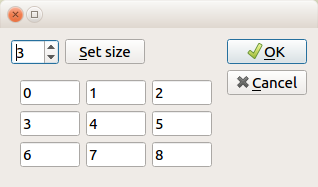

Framework pyQt - budowanie interace cz.2¶
W kolejnym przykładzie pokażemy, jak wykonać formatkę zawierającą własny widget z dynamicznie zmieniającymi się właściwościami. Jako przykład zostanie pokazana formatka do wpisywania wartości do macierzy konwolucji. Wielkość takiej macierzy nie jest znana, jej rozmiar (ilość wierszy \(\times\) ilość kolumn. Gotowy widget będzie można użyć na przykład w pluginie przeznaczonym do przetwarzania obrazów.
Ćwiczenie obejmuje trzy standardowe komponenty poznane we wcześniejszej lekcji:
- spinBox
- pushButton
- Przyciski standardowe OK|Cancel w orientacji pionowej (Qt.Vertical)
Nowością jest własny widget, czyli formatka do wpisywania macierzy. Po zakończeniu pracy będzie ona wyglądać następująco:
Użytkownik widgetu będzie miał tylko jedną możliwość: regulację wielkości macierzy, przy pomocy wartości ustawianej za pomocą spinBox. #1
Tworzenie głównej formatki¶
Tworzenie formatki rozpoczniemy od zdefiniowania layautu formatki głównej. Składa się ona z:
- głównego layaout (HBox), zawierającego dwa elementy: #2
- leftLayout po stronie lewej (VBox)
- standardowe przyciski OK, Cancel po prawej
W kolejnym kroku zdefiniujemy zawartość lewego layout. Składa się on z:
- topLayout u góry (HBox)
- własnego widgetu Grid (na razie nie zostanie utworzony, tymczasowo można go zastąpić stretchem)
Na samym końcu tworzymy topLayout zbudowany z spinBoxa, przycisku i wypełniającego stretcha.
Standardowe przyciski łączymy ze standardowymi akcjami (accept,*reject*) natomiast spinBox (o nazwie spinSize) i setButton, który służy do zatwierdzenia wielkości formatki) musimy połączyć w własnymi akcjami.
class Form(QDialog):
def __init__(self,n=3):
super().__init__()
#buttons
buttonBox = QDialogButtonBox()
buttonBox.setOrientation(Qt.Vertical)
buttonBox.setStandardButtons(QDialogButtonBox.Cancel|QDialogButtonBox.Ok)
#spin and filter
self.spinSize=QSpinBox()
self.spinSize.setValue(n)
self.setButton=QPushButton("&Set size")
self.grid=input_grid(n)
self.topLayout=QHBoxLayout()
self.topLayout.addWidget(self.spinSize)
self.topLayout.addWidget(self.setButton)
self.topLayout.addStretch()
self.leftLayout=QVBoxLayout() #2
self.leftLayout.addLayout(self.topLayout)
self.leftLayout.addWidget(self.grid)
self.mainLayout=QHBoxLayout()
self.mainLayout.addLayout(self.leftLayout)
self.mainLayout.addWidget(self.buttonBox)
self.setLayout(self.mainLayout)
W pierwszym kroku utworzymy własny widget Jako osobną klasę, która dziedziczy po QWidget:
class input_grid(QWidget): #1
def __init__(self,n=3): #2
super().__init__()
sizePolicy=QSizePolicy(QSizePolicy.Maximum, QSizePolicy.Fixed) #3
sizePolicy.setHeightForWidth(False)
self.inputs=[QLineEdit(str(i)) for i in range(n*n)] #4
grid=QGridLayout() #5
for i,lineEdit in enumerate(self.inputs):
lineEdit.setSizePolicy(sizePolicy) #6A
lineEdit.setMaximumSize(QSize(60,30)) #6B
grid.addWidget(lineEdit,i//n,i%n) #6C
self.setLayout(grid) #7
Własny widget dziedziczy po klasie z biblioteki Qt QWidget #1, tak więc tworzenie widgetu rozpoczynamy od zdefiniowania klasy potomnej względem QQidget.
Klasa będzie zawierać tylko funkcję __init__, do której przekażemy jeden argument wielkość macierzy, ustawionej domyślnie na 3. #2
Po zainicjowaniu obiektu właściwości obiektu nadrzędnego musimy zdefiniować sposób w jaki zachowywać się widget pod względem rozmiaru: #3
- Ma zawsze wypełniać dostępną przestrzeń
- Wysokość ma zależeć od wysokości
Następnie budujemy listę obiektów QLineEdit o wielkości n*n #4
Dodajemy teraz trzeci (obok VBox i HBox) typ layoutu - QGridLayout. Następnie dla każdego elementu QLineEdit: #5
- ustawiamy maksymalny rozmiar #6A
- przypisujemy zasady traktowania rozmiaru #6B
- każdy z obiektów QLineEdit dodajemy do odpowiedniego oczka siatki. Oczko siatki wyliczamy przy pomocy operatora dzielenia całkowitego indeksu lineEdit (wiersz) - stąd konieczność użycia funkcji enumerate i operatora modulo (kolumnę) #6C
Ostatnim krokiem jest ustawienie layoutu (grid) #7
W tym miejscu zakończyliśmy edycję klasy i możemy dodać ją do layout głównej formatki:
- tworzymy obiekt grid
- dodajemy go do leftLayout na miejsce tymczasowego obiektu stretch.
Nasz widget nie może być modyfikowany poprzez proste połączenie zdarzeń emitowanych przez elementy formatki z parametrami własnego widgety. Aby cała formatka działała, należy przygotować dwie funkcje, które będą połączone ze zdarzeniami emitowanymi przez elementy formatki. Pierwsza z nich z nich będzie przerysowywała formatkę przy każdej zmianie, druga, będzie ustawiała końcowy rozmiar formatki. Obie funkcje zostaną powiązane ze zdarzeniami:
- redraw_grid ze zdarzeniem ValueChanged emitowanym przez spinBox
- set_size ze zdarzeniem clicked emitowanym przez setButton
def redraw_grid(self):
self.leftLayout.removeWidget(self.grid)
self.grid.deleteLater()
n=self.spinSize.value()
self.grid=input_grid(n)
self.leftLayout.addWidget(self.grid)
self.tabela=[i.text() for i in self.grid.inputs]
def set_size(self):
self.resize(0,0)
Funkcja set_size jest prosta i nie wymaga komentarza - po prostu resetuje rozmiar formatki,
Funkcja redraw_grid wymaga wyjaśnienia czym jest przerysowanie obiektów: jest to usunięcie obiektu i narysowanie go na nowo. oznacza to konieczność wykonania następujących czynności:
- usunięcie obiektu
- wymazanie obiektu z pamięci (deleteLayer), należy zwrócić uwagę że metoda deleteLayer() obiektu grid jest dziedziczona po QWidget, nie musimy definiować sami. Usunięcie obiektu z pamięci ma na celu zapobierzenie sytuacji zbyt dużej konsumcji pamięci. Jest to zagadnienie skomplikowane, dotyczy współpracy środowiska Python, z frameworkiem Qt i kwestiami zarządzania pamięcią języka C++
- pobranie wartości ze spinBox
- zbudowanie nowego obiektu
- dodanie go do layoutu.
Ostatni krok nie ma nic wspólnego z interface graficznym ma jedynie na celu zachowanie zawartości macierzy w zmiennej, która może być przekazana do innych części programu. Zawartość zmiennej tabela wyświetlona zostaje po zakończeniu działania formatki
wyświetlenie całej formatki¶
Aby wyświetlić formatkę należy użyć krótkiego kodu, który:
- Zainicjuje formatkę
- Pokaże…
- Wykona i zachowa rezultaty
form=Form(3)
form.show()
result = form.exec_()
if result:
print(form.tabela)
else:
print("Nic nie wyszło")